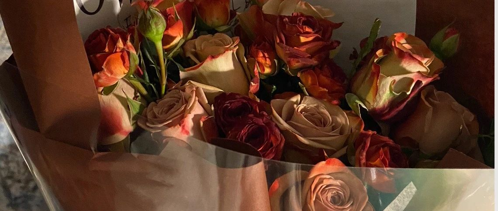

礼物包装纸背面的日记
原创
汽水服务
RoseCosmos
2022年12月25日 02:39
广东
（一）寄不到
你隐藏起你的爱人
对着我
就像你曾经
隐藏我
（二）玫瑰怎么样都刚刚好吧！
“可是你这样，零点的陌生男性来电，真的吓人一跳。”
说了你也不改，只管伤心，因为：
时间踩得刚刚好，很重要！
第一次收到忙着生气（我怎么这样呢！
第二次收到只好说：”人是不会改变的呀“这句话，今天不是用来讲失望，是讨论恒常给人带来的心安。
毕竟是玫瑰呀！
（三）
我担心错过你
总在家等你
毕竟相隔这么近
你也说过爱我
今天
明天
后天
都有等过
和你
一起过
（四）你变成幽灵了啊！名字也模糊了
做梦的时候记得你是好重要的人
为你准备礼物
是一件在我出生之前
就设置好的
奇异庆典
不属于我和你
属于整个部落
（五）
作为适口水杯，
合身毛衣外套，
运动棉袜，方便发夹，
温暖围巾，
在你的生活里
作为奇怪玩意，
本身或许在在宽敞的空间里，
巨大的画框里，
为视野划出的视觉中心，
专心致志地排除他物，
甚至也排除你，
来吸引你
“汪洋的垃圾海！”
奇怪玩意隔着玻璃对隔壁商店的玻璃杯说。
“什么？”
“我们会在那里度过生命里最长的时间。“奇怪玩意一直不停地开始讲：”那是最浪漫的地方，那是我们真正生活的区域。
“如果我们能度过这可怕的过于剧烈的青春期——在狭窄的区域内和这么多人类一起生活，经历这些短命鬼毫无耐心的摆弄。
“到了汪洋的垃圾海——或许我还能遇到你，我们相互之间或许会碰撞、挤压、变形。我身上的粒子会缓慢渗透进你，你也会缓慢渗透进我，那是真正的交合和幸福。
“汪洋的垃圾海！冒险真的会开始的地方。”